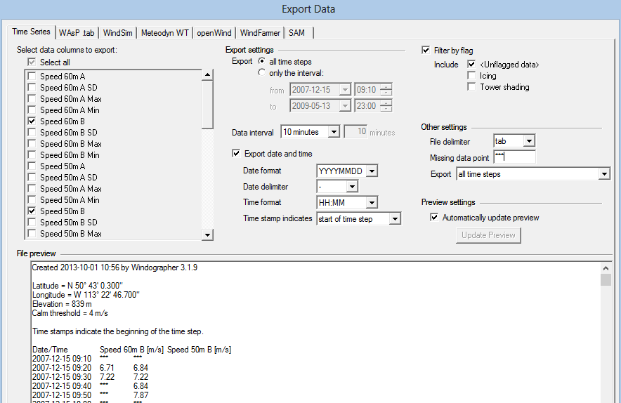

[1]:
import datetime
print('Last updated: {}'.format(datetime.date.today().strftime('%d %B, %Y')))
Last updated: 26 June, 2019
This tutorial summarises how to use a number of functions in the brightwind library to load data. The following topics are included:
Importing the brightwind library
Loading .csv and .txt files with the load_csv() function
Loading multiple files with the load_csv() function
Ignoring additional header lines when using the load_csv() function
Loading Excel files with the load_excel() function
Loading Windographer text files with the load_windographer_txt() function
Loading Campbell Scientific data with the load_campbell_scientific() function
Some other considerations when using file paths
The following command will import the brightwind python library assigning it to the tag ‘bw’. After this, ‘bw’ can be used to call specific functions within the library.
[2]:
import brightwind as bw
load_csv() function¶As mentioned above, we can now call the load_csv() of the brightwind library. First, we specify the name and directory of the input file.
[3]:
# specify location of existing sample dataset
data_file_path = r'C:\Users\Stephen\Documents\Analysis\demo_data.csv'
Then we can use the following command to load the data. The text to the left of the ‘=’ sign is the variable name that the data is assigned to. This can then be used to retrieve the data from memory.
[4]:
# load data as dataframe
data = bw.load_csv(data_file_path)
The following command can then be used to view the first few rows of the loaded data.
[5]:
# show first 5 rows of dataframe
data.head(5)
[5]:
| Spd80mN | Spd80mS | Spd60mN | Spd60mS | Spd40mN | Spd40mS | Spd80mNStd | Spd80mSStd | Spd60mNStd | Spd60mSStd | ... | Dir78mSStd | Dir58mS | Dir58mSStd | Dir38mS | Dir38mSStd | T2m | RH2m | P2m | PrcpTot | BattMin | |
|---|---|---|---|---|---|---|---|---|---|---|---|---|---|---|---|---|---|---|---|---|---|
| Timestamp | |||||||||||||||||||||
| 2016-01-09 15:30:00 | 8.370 | 7.911 | 8.160 | 7.849 | 7.857 | 7.626 | 1.240 | 1.075 | 1.060 | 0.947 | ... | 6.100 | 110.1 | 6.009 | 112.2 | 5.724 | 0.711 | 100.0 | 935.0 | 0.0 | 12.94 |
| 2016-01-09 15:40:00 | 8.250 | 7.961 | 8.100 | 7.884 | 7.952 | 7.840 | 0.897 | 0.875 | 0.900 | 0.855 | ... | 5.114 | 110.9 | 4.702 | 109.8 | 5.628 | 0.630 | 100.0 | 935.0 | 0.0 | 12.95 |
| 2016-01-09 17:00:00 | 7.652 | 7.545 | 7.671 | 7.551 | 7.531 | 7.457 | 0.756 | 0.703 | 0.797 | 0.749 | ... | 4.172 | 113.1 | 3.447 | 111.8 | 4.016 | 1.126 | 100.0 | 934.0 | 0.0 | 12.75 |
| 2016-01-09 17:10:00 | 7.382 | 7.325 | 6.818 | 6.689 | 6.252 | 6.174 | 0.844 | 0.810 | 0.897 | 0.875 | ... | 4.680 | 118.8 | 5.107 | 115.6 | 5.189 | 0.954 | 100.0 | 934.0 | 0.0 | 12.71 |
| 2016-01-09 17:20:00 | 7.977 | 7.791 | 8.110 | 7.915 | 8.140 | 7.974 | 0.556 | 0.528 | 0.562 | 0.524 | ... | 3.123 | 115.9 | 2.960 | 113.6 | 3.540 | 0.863 | 100.0 | 934.0 | 0.0 | 12.69 |
5 rows × 29 columns
The same approach can be used to load a comma separated ‘.txt’ file.
load_csv() function¶The following method can be used to load a group of files all at once, such as a long record of data which is split into numerous daily files. In this case, we can simply refer to a folder containing all the files for upload and include the following extra arguments.
[ ]:
# specify location of folder with multiple files
folder = r'C:\some_folder'
# load data as dataframe
data = bw.load_csv(folder, search_by_file_type=['.csv'], print_progress=True)
In the above case, ‘search_by_file_type’ is a list of file extensions to search for. This list can include multiple items, such as ['.csv', '.txt'].
The ‘print_progress’ argument simply prints out a statement below the cell showing how many files have been processed.
load_csv() function¶If the input file contains extra header lines (ie. the column headers are not contained in the first row), the ‘skiprows’ argument can be used to ignore these lines when loading the data.
[ ]:
# specify location of existing sample dataset, with 5 extra header rows
data_file_path = r'C:\..\some_file.csv'
# load data as dataframe
data = bw.load_csv(data_file_path, skiprows=[5])
The load_csv() function is a wrapper around the widely used pandas.read_csv() function, and the argument ‘skiprows’ is one of many key word arguments (kwargs) which can be specified when using the function. Other key word arguments are described in the pandas.read_csv() documentation, which can be found at:
https://pandas.pydata.org/pandas-docs/stable/generated/pandas.read_csv.html
load_excel() function¶The load_excel() function offers similar functionality to load_csv() for Excel files. The following syntax can be used to load a single file. The function can be used to load both ‘.xls’ and ‘.xlsx’ files, provided the correct extension is specified with the filename.
[ ]:
# specify location of existing sample dataset, with 5 extra header rows
data_file_path = r'C:\..\some_file.xlsx'
# load data as dataframe
data = bw.load_excel(data_file_path)
The following command can be used to simultaneously load multiple files from a single folder.
[ ]:
# specify location of folder with multiple files
folder = r'C:\some_folder'
# load data as dataframe
data = bw.load_excel(folder, print_progress=True)
Finally, the ‘skiprows’ key word argument can once again be used with load_excel() to ignore extra header lines within an input Excel file. load_excel() is again a wrapper around the pandas.read_excel() function, the full documentation of which is available at:
https://pandas.pydata.org/pandas-docs/stable/generated/pandas.read_excel.html
[ ]:
# load data as dataframe
data = bw.load_excel(data_file_path, skiprows=[5])
load_windographer_txt() function¶The load_windographer_txt() function can be used to load files which have been exported from Windographer.

In this case, the following commands are used.
[6]:
# specify location of existing sample dataset
windog_data_file_path = r'C:\Users\Stephen\Documents\Analysis\windographer_demo_data.txt'
# load data as dataframe
windog_data = bw.load_windographer_txt(windog_data_file_path)
# show first 5 rows of dataframe
windog_data.head(5)
[6]:
| Spd80mN | Spd80mS | Spd60mN | Spd60mS | Spd40mN | Spd40mS | Spd80mNStd | Spd80mSStd | Spd60mNStd | Spd60mSStd | ... | Dir78mSStd | Dir58mS | Dir58mSStd | Dir38mS | Dir38mSStd | T2m | RH2m | P2m | PrcpTot | BattMin | |
|---|---|---|---|---|---|---|---|---|---|---|---|---|---|---|---|---|---|---|---|---|---|
| Date/Time | |||||||||||||||||||||
| 2016-01-09 15:30:00 | 8.370 | 7.911 | 8.160 | 7.849 | 7.857 | 7.626 | 1.240 | 1.075 | 1.060 | 0.947 | ... | 6.100 | 110.1 | 6.009 | 112.2 | 5.724 | 0.711 | 100.0 | 935.0 | 0.0 | 12.94 |
| 2016-01-09 15:40:00 | 8.250 | 7.961 | 8.100 | 7.884 | 7.952 | 7.840 | 0.897 | 0.875 | 0.900 | 0.855 | ... | 5.114 | 110.9 | 4.702 | 109.8 | 5.628 | 0.630 | 100.0 | 935.0 | 0.0 | 12.95 |
| 2016-01-09 17:00:00 | 7.652 | 7.545 | 7.671 | 7.551 | 7.531 | 7.457 | 0.756 | 0.703 | 0.797 | 0.749 | ... | 4.172 | 113.1 | 3.447 | 111.8 | 4.016 | 1.126 | 100.0 | 934.0 | 0.0 | 12.75 |
| 2016-01-09 17:10:00 | 7.382 | 7.325 | 6.818 | 6.689 | 6.252 | 6.174 | 0.844 | 0.810 | 0.897 | 0.875 | ... | 4.680 | 118.8 | 5.107 | 115.6 | 5.189 | 0.954 | 100.0 | 934.0 | 0.0 | 12.71 |
| 2016-01-09 17:20:00 | 7.977 | 7.791 | 8.110 | 7.915 | 8.140 | 7.974 | 0.556 | 0.528 | 0.562 | 0.524 | ... | 3.123 | 115.9 | 2.960 | 113.6 | 3.540 | 0.863 | 100.0 | 934.0 | 0.0 | 12.69 |
5 rows × 29 columns
To load a Windographer file with a delimiter and flagged text which are different from the defaults, the following extra arguments can be used.
[ ]:
# load data as dataframe
windog_data = bw.load_windographer_txt(windog_data_file_path, delimiter=';', flag_text='***')
load_campbell_scientific() function¶The load_campbell_scientific() function can be used to load files created by Campbell Scientific loggers as follows.
[7]:
# specify location of existing sample dataset
campbell_data_file_path = r'C:\Users\Stephen\Documents\Analysis\campbell_scientific_demo_data.csv'
# load data as dataframe
campbell_data = bw.load_campbell_scientific(campbell_data_file_path)
# show first few rows of dataframe
campbell_data.head(5)
[7]:
| RECORD | Site | LoggerID | Spd80mN | Spd80mS | Spd60mN | Spd60mS | Spd40mN | Spd40mS | Spd80mNStd | ... | Dir78mSStd | Dir58mS | Dir58mSStd | Dir38mS | Dir38mSStd | T2m | RH2m | P2m | PrcpTot | BattMin | |
|---|---|---|---|---|---|---|---|---|---|---|---|---|---|---|---|---|---|---|---|---|---|
| Timestamp | |||||||||||||||||||||
| 2016-01-09 15:30:00 | 0 | demo_mast | 7000 | 8.370 | 7.911 | 8.160 | 7.849 | 7.857 | 7.626 | 1.240 | ... | 6.100 | 110.1 | 6.009 | 112.2 | 5.724 | 0.711 | 100.0 | 935.0 | 0.0 | 12.94 |
| 2016-01-09 15:40:00 | 1 | demo_mast | 7000 | 8.250 | 7.961 | 8.100 | 7.884 | 7.952 | 7.840 | 0.897 | ... | 5.114 | 110.9 | 4.702 | 109.8 | 5.628 | 0.630 | 100.0 | 935.0 | 0.0 | 12.95 |
| 2016-01-09 17:00:00 | 2 | demo_mast | 7000 | 7.652 | 7.545 | 7.671 | 7.551 | 7.531 | 7.457 | 0.756 | ... | 4.172 | 113.1 | 3.447 | 111.8 | 4.016 | 1.126 | 100.0 | 934.0 | 0.0 | 12.75 |
| 2016-01-09 17:10:00 | 3 | demo_mast | 7000 | 7.382 | 7.325 | 6.818 | 6.689 | 6.252 | 6.174 | 0.844 | ... | 4.680 | 118.8 | 5.107 | 115.6 | 5.189 | 0.954 | 100.0 | 934.0 | 0.0 | 12.71 |
| 2016-01-09 17:20:00 | 4 | demo_mast | 7000 | 7.977 | 7.791 | 8.110 | 7.915 | 8.140 | 7.974 | 0.556 | ... | 3.123 | 115.9 | 2.960 | 113.6 | 3.540 | 0.863 | 100.0 | 934.0 | 0.0 | 12.69 |
5 rows × 32 columns
Finally, the same function can once again be used to load in a group of files from one folder using the following syntax.
[ ]:
campbell_folder = r'C:\some_folder'
campbell_data = bw.load_campbell_scientific(campbell_folder, print_progress=True)
The local directory of the folder containing the demo datasets used in this tutorial and the following tutorials will depend on where you have download the brightwind library. An example directory has been included in the above examples in order to show how the functions are typically applied to local datasets. However these file paths will need to be updated in order to locate the demo datasets on your own computer.
For ease of use, the following tutorials and doc strings within the library refer to demo datasets using the syntax shown below. This method allows Python to locate the demo data locally without the user making any updates.
bw.datasets.demo_data.csv
bw.datasets.windographer_demo_data.txt
bw.datasets...
You may have also noticed that the file paths used in the above sections include the prefix ‘r’. This is because the backslash, ‘’, is a special character in Python and file paths which contain backslashes are not correctly interpretted by Python. Loading a csv file using a file path copied and pasted from Windows file explorer with backslashes will return the following error:
[11]:
data_file_path = 'C:\Users\Stephen\Documents\Analysis\demo_data.csv'
data = bw.load_csv(data_file_path)
File "<ipython-input-11-d85656ca28a3>", line 1
data_file_path = 'C:\Users\Stephen\Documents\Analysis\demo_data.csv'
^
SyntaxError: (unicode error) 'unicodeescape' codec can't decode bytes in position 2-3: truncated \UXXXXXXXX escape
The solution to this problem is to include a prefix, ‘r’ which allows backslashes in the filepath to be correctly interpreted by Python and the intended file to be found.